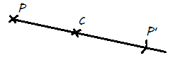

Adott a síkon (vagy a térben) egy pont (C), ezen a ponton kívüli pont (P) képét (P') úgy kapjuk meg, hogy a 2 pontot (P, C) összekötjük és meghosszabbítjuk az adott pont (P) másik oldala felé, az itt kapott félegyenesre rámérjük a P - C távolságot.
(a "C" pontot középpontnak vagy centrum pontnak nevezik)

tulajdonságai:
-a C ponton átmenő egyenes képe fix egyenes, de nem pontonként fix
-a C ponton át nem menő egyenes képe párhuzamos az eredti egyenessel